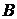
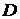

Две окружности касаются внутренним образом в точке   . Вершины и
. Вершины и  с прямым углом лежат на меньшей и большей окружностях соответственно. Прямая
с прямым углом лежат на меньшей и большей окружностях соответственно. Прямая  вторично пересекает бо́льшую окружность в точке , а прямая вторично пересекает меньшую окружность в точке
вторично пересекает бо́льшую окружность в точке , а прямая вторично пересекает меньшую окружность в точке
а) Докажите, что прямые и параллельны.
б) Найдите  , если радиусы окружностей равны 3 и 4.
, если радиусы окружностей равны 3 и 4.